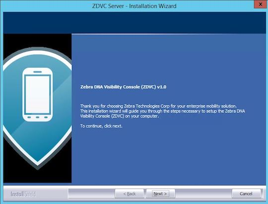
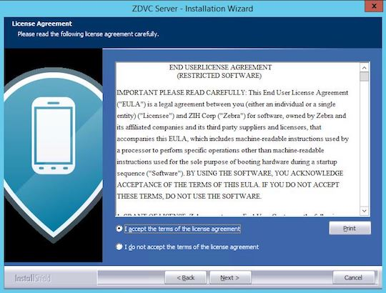
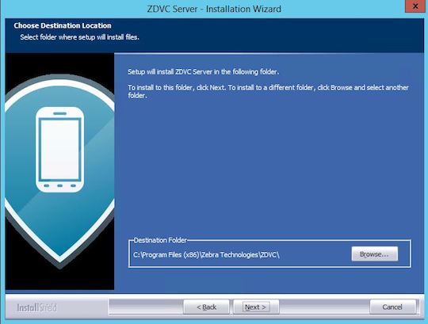
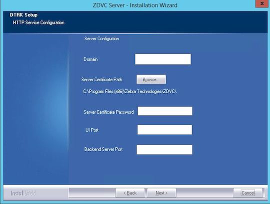
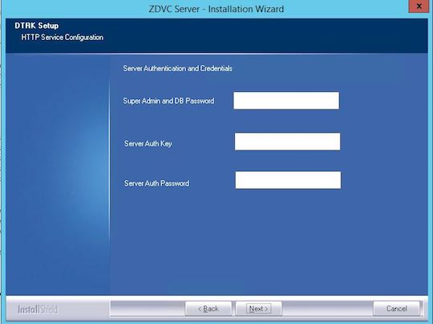
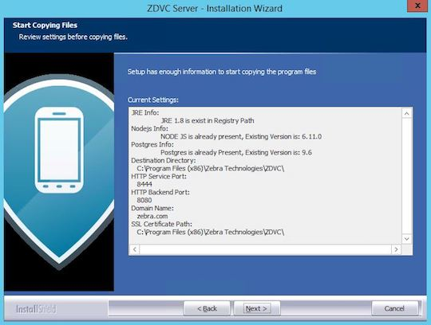
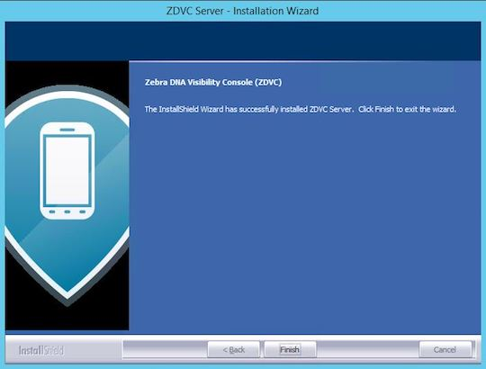

Overview
Device Tracker server runs on a supported Windows-based server or desktop. Device Tracker client runs on supported Zebra devices. This section provides system requirements and instructions for install and setup for the solution.
Solution components:
- On-premise Device Tracker server - application server with database
- Web portal - dashboard accessible from a supported browser for monitoring devices
- Device Tracker client (on mobile device) - reports presence status and device information to server
- Other:
- SSL certificate (procured by a signed Certificate Authority) - configured on server for secure HTTPS communication
- Open specified incoming and outgoing ports - for server communication through the firewall, by default ports 8443 and 8080
Important: An SSL Certificate is required from a third party certificate authority (CA), such as Verisign or Thawte. Any self-signed certificate or one issued by a non-third party CA will not work. The .pfx certificate must contain the complete certificate chain, including intermediate certificates.
System Requirements
This section provides the server and device requirements. Device Tracker supports a maximum of 10,000 devices per installation.
Server Requirements
Windows Operating Systems supported:
- Windows® 2012 server, 64-bit processor
- Windows® 2016, 64-bit processor
Browsers supported (connect over https):
- Google Chrome Browser version 66 and higher
- Microsoft Internet Explorer version 11 and higher
- Microsoft Edge for Windows 10
- Safari for Mac version 9 and higher
Software Required (included in server installation):
- Java runtime
- Node.js version 6.11
- PostgreSQL 9.6.3-3 or higher
- Device Tracker software (server and client)
Network Access Requirements:
- If required, open incoming and outgoing ports for communication between server and mobile devices through the server firewall. The default ports used are:
- Data Port 8080 for Device Tracker client to register and transmit device data
- Web Portal Port 8443 for accessing Device Tracker web portal
- If required, perform DNS setup to add server IP address to the DNS server.
- If required, open incoming and outgoing ports for communication between server and mobile devices through the server firewall. The default ports used are:
Hardware Requirements:
- Minimum CPU cores: 8
- Minimum memory (RAM): 4 GB
- Minimum available hard drive space: 300 GB
Recommended hardware requirements based on number of devices:
Number of Devices RAM CPU Cores Hard Drive Space Up to 1,000 devices 4 GB 8 cores 300 GB 1,000 to 5,000 devices 8 GB 8 cores 600 GB Up to 10,000 devices 16 GB 16 cores 750 GB
Device Requirements
Requirements for Device Tracker client:
- The device is connected to the same network as the server.
- Zebra Data Service agent is running on the device. This agent collects data from the device and transmits it to the Device Tracker server.
- Bluetooth radio is enabled on the device. BLE (Bluetooth Low Energy) beacons are used to help locate devices.
- The server address is configured in the Device Tracker client to communicate with the server.
See supported Zebra devices.
Server Install & Setup
Install Device Tracker server on the supported system that meets the specified requirements. After server installation, further network and certificate setup is required to allow communication between the server and devices via DNS and firewall. Instructions for server installation and setup:
Server Installation
- Double-click on the .EXE to launch the installer.
- At the initial window, click Next.  Figure 1. Installation - initial screen
- Accept the license agreement. Click Next.  Figure 2. Installation - EULA
- Accept the default folder or browse to the destination folder. Click Next.  Figure 3. Installation - destination location
- Enter in the server configurations, then click Next:
- Domain - domain name for server, e.g. "name.company.com"
- Server Certificate Path - location of server certificate (.pfx file)
- Server Certificate Password - password for server certificate
- UI port - by default, 8443
- Backend Server Port - by default, 8080  Figure 4. Installation - server configuration
- Enter in server authentication and credentials, then click Next:
- Super admin and database password
- Server auth key
- Server auth password  Figure 5. Installation - server authentication and credentials
- Review settings. Click Next.  Figure 6. Installation - review settings
- Installation complete. Click Finish.  Figure 7. Installation - complete
Server Setup
DNS (Domain Name Server) Setup. Device Tracker server runs in a domain, for example name.company.com. To run Device Tracker, an entry in the DNS server is required to add the server IP address. The DNS server and Device Tracker server are required to be on the same network. Contact your local IT Administrator to configure the domain to IP address mapping.
Server SSL Certificate. An SSL certificate is required for secured connections. Steps to generate the certificate:
A. Zebra recommends the certificate to be procured in .p7b format and the certificate private key to be a .key file. If the certificates are in different format, use a SSL certificate converter tool to convert to the proper format.
B. Download OpenSSL tool and install on the server.
C. Create an empty directory named "generated_certs" to contain the .pfx certificate.
D. Copy the following certificate files to "generated_certs" folder: primary certificate (e.g. "ssl_certificate.p7b"), private key (e.g. "ppc_private_key.key"), and intermediate CA certificate (e.g. "IntermediateCA.cer"). The intermediate CA certificate is optional - use if required in the certificate chain.
E. Open a command prompt. Execute the following command to generate "ssl_certificate.cer":
openssl pkcs7 -print_certs -in ssl_certificate.p7b -out ssl_certificate.cer
F. At the command prompt, execute the following command:
openssl pkcs12 -export -in ssl_certificate.cer -inkey ppc_private_key.key -out ssl_certificate.pfx -certfile IntermediateCA.cer
Where "-certfile IntermediateCA.cer" is optional.
G. When prompted, enter the certificate password to export "ssl_certificate.pfx".
H. Copy the SSL certificate "ssl_certificate.pfx" with domain name “name.company.com” to a designated folder.Open Inbound/Outbound Ports on the Firewall. The appropriate ports are required to be opened for inbound/outbound network traffic flow through the firewall for communication between the server and devices. The method to open the ports depends on the firewall software used by the network administrator. The ports are specified during the server install. By default the ports are:
- Inbound ports: TCP ports 8080 and 8443
- Outbound port: TCP port 8080
Run the Device Tracker Server Software. Start the server services by launching the desktop shortcut icon "START_ZDVC_SERVICE". Open the supported browser. Enter the default server URL: https://name.company.com:8443/zdvc
Where "name.company.com:8443" is replaced with the appropriate domain and port number.
Default login credentials (case-sensitive) for super admin user are:
- User: SAdmin
- Password: admin
Zebra recommends to change the password immediately for the super admin user to avoid unauthorized access. Tap on "SAdmin" user at the top right of the Admin View and select "Change password".
Server certificate validation. Use an SSL Tool (such as ssltools.com) to aid in diagnostics and validate the certificate chain.
A. Open ssltools.com in the browser.
B. Enter the Web UI URL, for examplehttps://name.company.com:8443/zdvc
C. Click the Scan button. A successful result returns green checks for each step. See Figure 8 below.
D. Enter the backend URL for your server, for examplehttps://name.company.com:8080/zdvc
E. Click the Scan button. A successful result returns green checks for each step: Figure 8. SSLTools.com results
Figure 8. SSLTools.com results
Client Install & Setup
Install Device Tracker client on the supported Zebra device to register the device and transmit data to the server. Client install and setup can be accomplished either manually or remotely with Zebra's StageNow or an EMM (Enterprise Mobility Management).
Client Installation
Steps for client installation on the device, which may be performed either manually or with an EMM (Enterprise Mobile Management):
- Download Device Tracker client from Zebra Support and Downloads. Extract the files and folders.
- Install DTRKClient.apk.
- Reboot the device
Client Configuration
Configure the client settings either manually or remotely. For information on using CSP for remote configuration deployment, refer to MX documentation.
Manual Configuration
Steps for manual client configuration after installation:
- Open Device Tracker client.
- Tap "Yes" to "Ignore battery optimizations". This is required for the client to remain connected to the server while running in the background.
- Tap "Allow" to "Allow Device Tracker to access this device's location". This is required to allow BLE (Bluetooth Low Energy) locationing.
- Tap the hamburger menu at the top right, then tap "Settings".
- Enter in the following information:
- Server URL - URL for the server with port number and Device Tracker path specified, for example: name.company.com:8080/zdvc/dtrk, where "name.company.com:8080" is replaced with the appropriate domain and port number. The URL must not contain "https://" nor "http://".
- Server Auth UserName - UserName designated during server install
- Server Auth Password - Password designated during server install
- Tap the device back button to save the changes and return to the main screen. Device Tracker client registers with the server and loads "Devices to be found".
Remote Configuration
After client installation, follow these steps to remotely configure the client:
- Disable battery optimization
- Reboot device (refer to Power Manager in StageNow documentation)
- Configure Device Tracker settings with CSP
- Start Device Tracker Service
Detailed procedures follow for Device Tracker configuration.
Steps to create StageNow profile to automatically bypass the device Battery Optimization pop-up message:
- Open StageNow on a PC.
- In the StageNow home screen, click “Create New Profile” from the left menu.
- Ensure the proper MX version is selected at the top drop-down selector. Select “XpertMode" from the table. Click Create.
 Figure 9. Profile wizard
Figure 9. Profile wizard - Enter the profile name. Click Start.
- Scroll down and click the plus (+) sign next to “AppMgr”. This adds to the Config tab on the right side. Click Add.
 Figure 10. Add Setting
Figure 10. Add Setting - In the StageNow Config section, click “Re-use Saved Setting” tab. The screen is populated with the information from the setting created in step 5. Validate all settings and click Continue.
 Figure 11. Re-use saved setting
Figure 11. Re-use saved setting - Click “Complete Profile."
- In the Publish section, select the desired barcode type. Click Test.
 Figure 12. Generate StageNow barcode
Figure 12. Generate StageNow barcode - A window opens with the generated StageNow barcode in .pdf format. When ready to publish, click Publish.
- For EMM Staging, continue to section "Steps for EMM Staging" below.
- Open the StageNow client on the device.
- Scan the barcode generated to automatically bypass the Battery Optimization message.
Steps for remote client configuration with StageNow and CSP Plug-in:
- Download Device Tracker client software DTRKClient.zip from Zebra Support and Downloads. The .zip file includes the following:
- com.zebra.devicetracker.dsd
- DTRKClient.apk
- Open StageNow on a PC.
- Import the CSP Plugin Library:
A. In the StageNow home screen, click “CSP Library” from the left menu.
B. Upload the .zip file to the CSP Library by clicking “Choose File” then browsing to the .zip file, or by dragging and dropping the .zip file. Click "OK" in the confirmation message.
C. Once successfully uploaded, the CSP Library is listed in the Plugin tab.
 Figure 13. Import plugin into CSP Library
Figure 13. Import plugin into CSP Library - Create a new setting:
A. In the StageNow home screen, click “All Settings” from the left menu. Click “Create Setting” at the top right.
 Figure 14. Import into CSP Library
Figure 14. Import into CSP Library
B. Select the MX version for the device. For the “Setting Type”, select “com.zebra.devicetracker." Enter a name for the setting. Enter the server URL e.g.name.company.com:8080/zdvc/dtrk, where "name.company.com:8080" is replaced with the appropriate domain name and port number. Select the desired option to determine whether or not to allow the end user to edit the setting. Enter the "Server Auth UserName" and "Server Auth Password", both designated during server install.
 Figure 15. Create New Setting
Figure 15. Create New Setting
C. Tap Save. The new setting is listed in the Settings screen. Figure 16. New Setting created
Figure 16. New Setting created - Create profile:
A. In the StageNow home screen, click “Create New Profile” from the left menu.
B. Ensure the proper MX version is selected at the top drop-down selector. Select “XpertMode" from the table. Click Create.
Figure 17. Profile wizard
C. Enter the profile name. Click Start.
D. Click the plus (+) sign next to “com.zebra.devicetracker”. This adds to the Config tab on the right side. Click Add.
 Figure 18. Add Setting
Figure 18. Add Setting
E. In the StageNow Config section, click “Re-use Saved Setting” tab. The screen is populated with the information from the setting created in previous steps. Validate all settings and click Continue. Figure 19. Re-use saved setting
Figure 19. Re-use saved setting
F. Click “Complete Profile."
G. In the Publish section, select the desired barcode type. Click Test.
Figure 20. Generate StageNow barcode
H. A window opens with the generated StageNow barcode in .pdf format. When ready to publish, click Publish. - For EMM Staging, continue to section "Steps for EMM Staging" below.
- Open the StageNow client on the device.
- Scan the barcode generated to configure the Device Tracker client with the settings specified.
Steps to create StageNow profile to start the Device Tracker service remotely:
- Open StageNow on a PC.
- In the StageNow home screen, click “Create New Profile” from the left menu.
- Ensure the proper MX version is selected at the top drop-down selector. Select “XpertMode" from the table. Click Create.
Figure 21. Profile wizard - Enter the profile name. Click Start.
- Scroll down and click the plus (+) sign next to “Intent”. This adds to the Config tab on the right side. Click Add.
 Figure 22. Add Setting
Figure 22. Add Setting - Enter the following information:
- Action: select "StartService"
- Android Action Name: enter "com.zebra.devicetracker.csp.DTCspService"
- Package Name: enter "com.zebra.devicetracker"
Click Continue.
 Figure 23. Configure Setting
Figure 23. Configure Setting
- Click “Complete Profile."
- In the Publish section, select the desired barcode type. Click Test.
Figure 24. Generate StageNow barcode
- A window opens with the generated StageNow barcode in .pdf format. When ready to publish, click Publish.
- For EMM Staging, continue to section "Steps for EMM Staging" below.
- Open the StageNow client on the device.
- Scan the barcode generated to automatically bypass the Battery Optimization message.
For more information on StageNow, refer to its documentation and download.
Steps for EMM Staging (optional):
- Pre-requisite steps:
- Follow procedure for "Device Tracker remote configuration with StageNow and CSP Plug-in" up to step 6
- Follow procedure for "Create StageNow profile to automatically bypass the device Battery Optimization pop-up message" up to step 11.
- Select "Export option for EMM" from the top to export the .xml file. Save the .xml file.
 Figure 25. Export for EMM
Figure 25. Export for EMM - Push the .xml settings via EMM to the device for the desired client configuration.